Welcome to my blog
关于此网站
这是我的个人博客，主要用来记录一些学习笔记、生活感悟、生活收获等。
当你看到这里的时候，说明你已经成功地访问到了我的博客。
1.了解一下
如果你是第一次来到我的博客，那么你可能需要先了解一下
- 搭建框架
- Hexo
- 快速 : 轻量级、高效、易于使用
- 简洁 : 专注于内容创作
- 高效 : 静态页面生成，无数据库依赖，快速响应
- 强大 : 支持各种插件扩展，可定制化程度高
- 主题
- butterfly
- 简洁
- 美观
- 功能强大
- butterfly
- Hexo
- 评论系统
- Livere
- 简单
- 免费
- 安全
- 便捷
- …
- Waline
- 功能强大
- 免费
- 便捷
- 网站统计
- …
- Livere
2.关于我
- 虚拟名字：部鑫
- 爱好：
- 编程
- 旅游
- 音乐
- 机器学习
- 物联网
- 人工智能
- …
- 性格：
- 热爱生活
- 乐观向上
- 喜欢交流
- 不善交流(就是这么矛盾)
- …
3.关于本站
我将会发布笔记
- 编程
- 生活
- 音乐
- 学习
- …
我也会转载一些优秀的文章，欢迎大家学习交流！
如果你要和我玩游戏，欢迎加入我的QQ群：255918033
最后，欢迎大家多多提意见，共同进步！

本博客所有文章除特别声明外，均采用 CC BY-NC-SA 4.0 许可协议。转载请注明来源 BUXIN！
 wechat
wechat alipay
alipay


评论